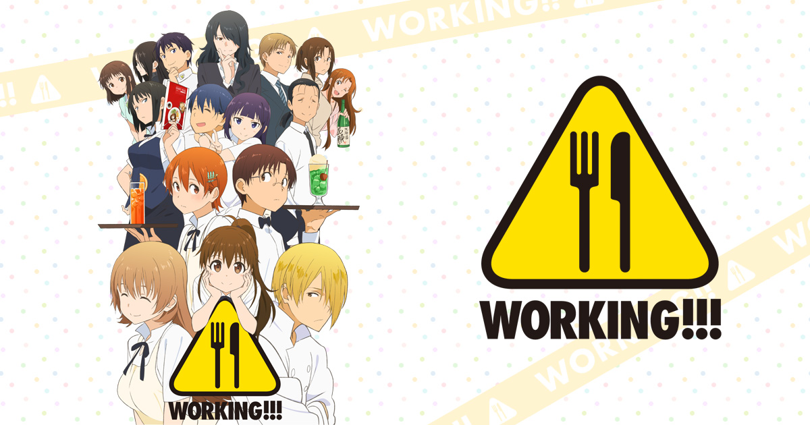
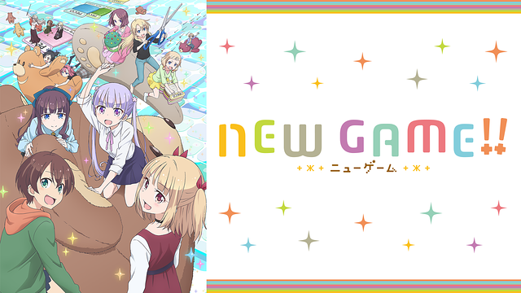

日常・ほのぼの系
-
あらすじ
キャスト
感想
WORKING!!

あらすじ
北海道にあるファミリーレストラン「ワグナリア」で、小さなもの好きの小鳥遊宗太は身長が低い種島ぽぷらに誘われてアルバイトをすることになる。 風変わりな仕事仲間に驚きながら働くことになるのだが、小鳥遊宗太本人も例にもれず一風変わっているのだった。 そんな個性的とは聞こえはいいが、一癖も二癖もある店員が中心となりワグナリアは営業する。
© 高津カリノ／スクウェアエニックス・「WORKING!!」製作委員会
キャスト
小鳥遊宗太：福山 潤 種島ぽぷら：阿澄佳奈 伊波まひる：藤田 咲 轟八千代：喜多村英梨 白藤杏子：渡辺久美子 佐藤 潤：小野大輔 相馬博臣：神谷浩史 小鳥遊一枝：白石涼子 小鳥遊泉：日笠陽子 小鳥遊梢：伊藤 静 小鳥遊なずな：斎藤桃子 音尾兵吾：中田譲治 山田 葵：広橋 涼 松本麻耶：川瀬晶子 ほか
感想
高校生バイトの軽いコメディー調な日常系アニメ
「WORKING!!」はその名の通り高校生のバイト風景を描いた作品です。 個性豊かな従業員との絡みはとても面白く、描写がどちらかというとリアル寄りになっていて感情移入しやすくなっていたと思います。
原作は４コマ漫画だそうですが、ストーリーがつながっていて続きが見たくなるようになっていて、恋愛も含めて重いシーンがほとんどないので疲れた時などにはおすすめです。
これを見れば働くのが嫌な人も少しは働きたくなるかも！？
NEW GAME!!

あらすじ
高校を卒業後、幼い頃に夢中になって遊んでいたゲーム《フェアリーズストーリー》を制作したゲーム会社《イーグルジャンプ》に就職した涼風青葉。 新入社員として社会人一日目を迎えた青葉は、朝の満員電車に揺られながら、《イーグルジャンプ》へと出社してくる。 会社の前まで来たもののこのまま中に入ってしまっていいのだろうかと躊躇してしまい中々一歩が踏み出せない青葉 そのとき出社してきた先輩社員の一人である遠山りんに声をかけられ、青葉は無事に《イーグルジャンプ》の中へと案内されるのだが……。
© 得能正太郎・芳文社／NEW GAME!!製作委員会
キャスト
涼風青葉：高田憂希 八神コウ：日笠陽子 遠山りん：茅野愛衣 滝本ひふみ：山口愛 篠田はじめ：戸田めぐみ 飯島ゆん：竹尾歩美 桜ねね：朝日奈丸佳 阿波根うみこ：森永千才 葉月しずく：喜多村英梨 望月紅葉：鈴木亜理沙 鳴海ツバメ：大和田仁美 星川ほたる：石見舞菜香 大和・クリスティーナ・和子：名塚佳織
感想
ゲーム会社を舞台として、若い女性社員のチームに配属されたヒロインの日常・勤務生活を描いたアニメ
この作品の魅力はキャラクターの可愛さとストーリーもゆるい日常だけでなく、しっかりとお仕事アニメとして成り立っていてまったり日常系が苦手な人でもみれるところだと思います。 きらら系ということもあり百合要素が含まれますが百合が苦手な方でも大丈夫なレベルだと個人的に思っています。 まとめると万人受けする作品でしょう。